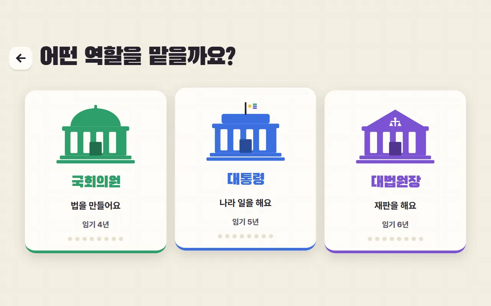
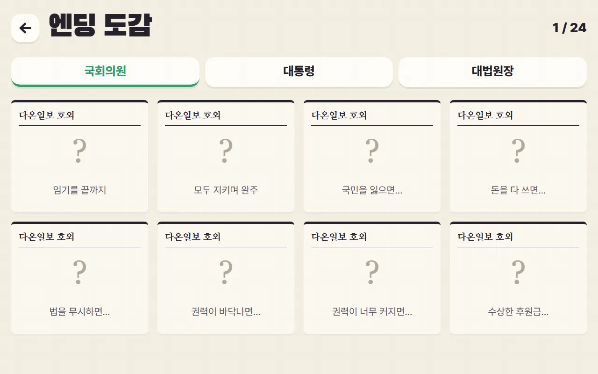
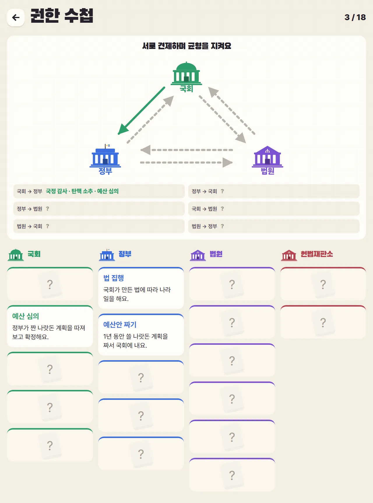

1
이름과 모습 고르기
처음 한 번만 해요. 얼굴 4가지 중에서 나와 닮은 모습을 골라요.
- 1이름 (안 쓰면 "새봄")
- 2모습 4가지
국회의원·대통령·대법원장이 되어 다온 공화국을 지켜라!
카드 20장에 답하며 게이지 4개가 바닥나거나 넘치지 않게 임기를 끝까지 마치기!
⚖국민·살림·법은 0이 되면 끝. 권력은 0도, 꽉 차도 끝 — 가운데가 안전해요!
처음 한 번만 해요. 얼굴 4가지 중에서 나와 닮은 모습을 골라요.

123역할마다 만나는 사람, 카드, 엔딩이 달라요.
카드를 왼쪽·오른쪽으로 밀거나 버튼을 눌러요. 크롬북은 ← → 키도 돼요.
카드를 천천히 옆으로 밀면(마우스는 버튼 위에 올리면) 바뀔 게이지 위에 점이 떠요. 점이 클수록 많이 바뀌어요. 오를지 내릴지는 비밀!
어떤 결정을 하면 새 권한 카드를 얻어요. 모두 권한 수첩에 모여요.
게이지가 바닥나거나 임기를 마치면 다온일보 호외가 나와요. 엔딩마다 삼권분립 노트가 있어요.


이 칸은 수업을 준비하는 선생님을 위한 내용이에요.
6학년 사회 · 민주 정치 — 국회·정부·법원이 하는 일과 삼권 분립(서로 견제하며 균형 잡기)